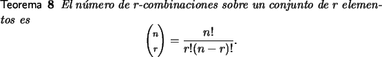
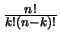

A diferencia de una permutación, en la cual el orden es importante, en una r -combinación el orden de los elementos no es importante. Una r -combinación sobre un conjunto A con n elementos es un subconjunto de A con r elementos.
Existe un relación directa entre permutaciones y combinaciones, de hecho cada r -combinación da lugar a r! r -permutaciones. Como conocemos el número de r-permutaciones (teorema 5) entonces se tiene el siguiente teorema.

Este último valor se conoce cono coeficiente binomial pues con alguna
cantidad de esfuerzo es posible demostrar que:
Muchos problemas de conteo pueden resolverse recurriendo a problemas diferentes pero con la misma solución.
Por ejemplo considere una estructura que solo tiene 2 elementos repetidos, uno k veces y el otro n - k veces. El número de permutaciones de los elementos en esta estructura es  que es exactamente


 .
.
Esto en realidad no resulta complejo, pues hacer las permutaciones indicadas es equivalente al siguiente problema, dado el conjunto {1, 2,..., n} elegir subconjuntos de tamaño k que correpondan a las posiciones en donde se van a ubicar los k elementos Una última forma se discutirá en estas notas, no sin advertir que con las herramientas discutidas es posible abordar problemas diversos que no se han discutido en estas notas.